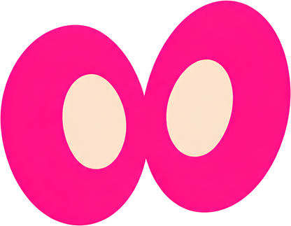

Oi 👋
Pronto para falar com o Karlu?
Rostos
77 olhares para o Karlu
Cores
Uma cor para os dois olhos
Reações
129 emoções para disparar
Mais
Tudo sobre o seu Karlu
Olhar
Arraste o ponto para o Karlu olhar para onde você quiser.
Ajustes finos
Ligue o controle total para o Karlu seguir estes valores.
Modo automático
Os sons tocam só aqui no app, não no Karlu.
Favoritos
Presets
Salve rosto, cor, ajustes e modo com um nome e aplique de novo com um toque.
Minha conta
Visitante
—
OnlineDepois do primeiro login, o app funciona sem internet.
Sobre e ajuda

O Karlu é um bichinho virtual com display redondo e mais de 70 olhares. Criado em Salvador (BA) pela Starlyn Infinite.
Versão 1.0Como conecto ao Karlu?
Ligue o Karlu, ative o Bluetooth do celular, toque em “Conectar ao Karlu” e escolha o dispositivo Starboy na lista.
Não achei o Karlu na lista
Confirme que o Bluetooth está ligado e que o Karlu está ligado e perto do celular. Permita as permissões de Bluetooth quando o Android pedir.
Conectou e caiu
Aproxime o celular do Karlu e toque em “Reconectar”. Se continuar, desligue e ligue o Karlu.
Funciona sem internet?
Sim. Depois do primeiro login o app abre e controla o Karlu sem internet.